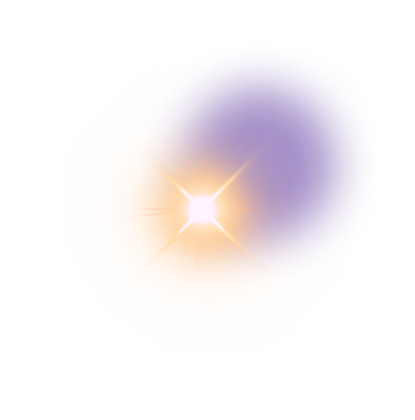

CROWN
> 7 ЛЕТ ВБП
в 1-й линии ALK+ мНМРЛ1
Максимизируйте эффективность
1-й линии терапии ALK+ мНМРЛ
Длительность ВБП 1‑й линии лечения является значимым вкладом в выживаемость пациентов1-4
Длительно сохраняющаяся ВБП в 1-й линии отражает более глубокий и стойкий ответ; в сочетании с отсроченным развитием резистентности она тесно коррелирует с увеличением общей выживаемости1-4.
1-я линия терапии — наилучшая возможность максимально повлиять на клинические5
~1 из 3 пациентов с АLK+ мНМРЛ не получает 2-ю линию терапии, в основном из-за клинического ухудшения, обусловленного быстрым прогрессированием заболевания5. Важно отметить, что эффективность терапии снижается с каждой последующей линией лечения5-7.
Терапия 1‑й линии должна обеспечивать защиту от неблагоприятного влияния метастазов в головной мозг8
При применении ИТК ALK второго поколения примерно у 20% пациентов развиваются метастазы в головной мозг в течение 4-5 лет9,10.
Видеоматериалы
Лекции и вебинары посвященные новому прорыву в исследовании CROWN
Данилова Анастасия Сергеевна
CROWN 7 лет спустя: кто получил «корону» в терапии ALK+ мНМРЛ?
Корниецкая Анна Леонидовна
CROWN 7 лет спустя: профиль безопасности ЛОРВИКВА®

ALK – киназа анапластической лимфомы; мНМРЛ – метастатический немелкоклеточный рак легкого; ВБП – выживаемость без прогрессирования; ИТК – ингибитор тирозинкиназы; НЯ – нежелательное явление; BICR – независимая централизованная оценка; ДИ – доверительный интервал; ОР – отношение рисков; ИВН – исследователь; AJCC – Американский объединенный онкологический комитет; ОС по ECOG – оценка общего состояния по шкале Восточной объединенной онкологической группы; МКР – межквартильный размах, ITT (intention to therat) – популяция всех рандомизированных пациентов согласно назначенному лечению; SD – стандартное отклонение; CDx – метод сопроводительной диагностики; ЦНС – центральная нервная система; ДО – длительность ответа; ДО ИК – длительность интракраниального ответа; ЧОО ИК – частота объективного интракраниального ответа; ЧОО – частота объективного ответа; ОВ – общая выживаемость; RECIST – критерии оценки ответа солидных опухолей
* Для значительной доли пациентов † В исследовании CROWN была достигнута первичная конечная точка — ВБП — по результатам первичного анализа, оцениваемого по критериям BICR (медиана наблюдения для оценки ВБП составила 18,3 месяца в группе ЛОРВИКВА® и 14,8 месяца в группе кризотиниба); медиана ВБП в группе ЛОРВИКВА® не была достигнута. Для подтверждения эффекта ЛОРВИКВА® по сравнению с кризотинибом при более длительном наблюдении был выполнен внеплановый анализ с оценкой исследователей при медиане наблюдения для ВБП около 83 месяцев у пациентов, получавших ЛОРВИКВА® (77,2 месяца — у пациентов, получавших кризотиниб). Все опухоле‑ассоциированные конечные точки, представленные в 7‑летнем анализе, оценивались исследователями1,6. ‡ ОГРАНИЧЕНИЯ: Результаты этого незапланированного, основанного на данных по оценке исследователя анализа носят описательный характер. Формальная проверка гипотез не проводилась, учитывая, что конечная точка ВБП ранее была достигнута в первичном анализе исследования CROWN. Результаты представлены в описательной форме1.
Список источников:
- McCoach CE, et al. Ann Oncol. 2017;28(11):2707-2714.
- Campelo RG, et al. Presented at: ASCO 2025; May 30-June 3, 2025; Chicago, IL.
- Xie J, et al. Int J Gen Med. 2025;18:2151-2171.
- Xu H, et al. Thor Cancer. 2019;10(5):1096-1102.
- Bauman JR, et al. Lung Cancer. 2024;195:107919.
- Peters S, et al. Ann Oncol. 2026;37(1):92-103.
- Novello S, et al. Ann Oncol. 2018;29(6):1409-1416.
- Nagasaka M, et al. J Thorac Oncol. 2021;16(4):532-536.
- Uprety D, et al. Lung Cancer. 2025;201:108436.
- Girard N, et al. Presented at: IASLC 2025 World Conference on Lung Cancer; September 6-9, 2025; Barcelona, Spain.
- Shaw AT, et al. Ann Oncol. 2026; doi: https://doi.org/10.1016/j.annonc.2026.05.692.
- Camidge DR, et al. J Clin Oncol. 2020;38(31):3592-3603.
- Liu G, et al. Oncologist. 2025;30(10):oyaf287.
- Liu G, et al. Lung Cancer. 2024;191:107535.
- Shaw AT, et al. N Engl J Med. 2020;383(21):2018-2029.
- Shaw AT, Bauer TM, de Marinis F, et al; CROWN Trial Investigators. First-line lorlatinib or crizotinib in advanced ALK-positive lung cancer. N Engl J Med. 2020;383(21):2018-2029.
- Инструкция по применению лекарственного препарата для медицинского применения Лорвиква® (Регистрационное удостоверение лекарственного препарата для медицинского применения ЛП-007198 от 20.07.2021 г. Изменение в Инструкции от 10.03.2022).